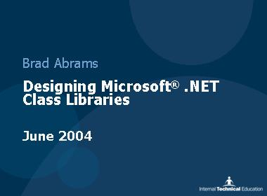
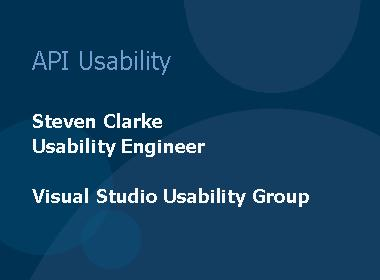
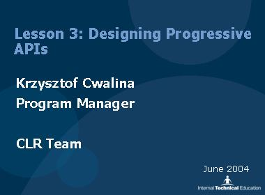
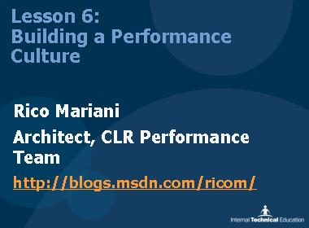
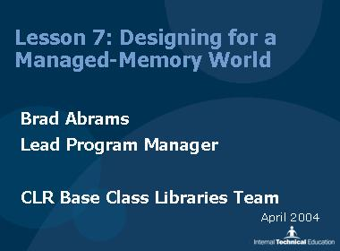
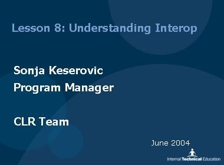
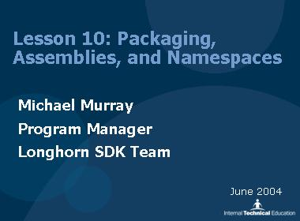
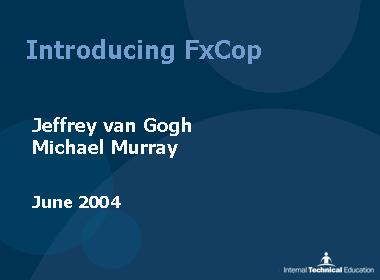
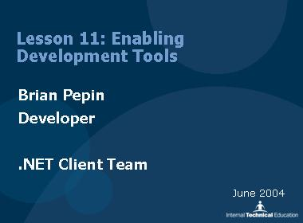

The Designing .NET Class Libraries series presents design guidelines for developing classes and components that extend the .NET Framework.
Setting The Stage - Brad Abrams [EXE] [2005/01/14]
[EXE] [2005/01/14]Introduction to the practice of API design. Topics covered include terminology, first principles, and why API design is a crucial thing to get right (the first time!).
Naming Conventions - Brad Abrams[EXE] [2005/01/21]Learn why good naming is a key factor in API design, and what the recommended naming guidelines are to ensure consistency with the rest of the .NET Framework.
Rich Type System - Brad Abrams [EXE] [2005/01/28]
[EXE] [2005/01/28]Learn what rich constructs from the CLR's type system are available and appropriate for developing APIs. Also, learn when to use reference over value types, delegates, exceptions, attributes, and many other important features.
Member Types - Brad Abrams[EXE] [2005/02/04]Learn when to use certain member constructs such as properties, methods, and events over other constructs and why.
Designing Inheritance Hierarchies - Brad Abrams [EXE] [2005/02/11]
[EXE] [2005/02/11]Learn how to design appropriately for specialization, specifically when to use inheritence over aggregation, abstract classes over interfaces, and so on. Also, learn situations in which virtual methods are called for.
API Usability - Steven Clarke[EXE] [2005/02/18]Learn to understand your target audience, profile users with personas, and develop APIs that are easy to use and understand.
Designing Progressive APIs - Krzysztof Cwalina[EXE] [2005/02/25]Learn how to design APIs that are appropriate for a broad range of user personas, while at the same time providing a unified framework with gradients between levels of complexity.
CLR Performance Tips - Rico Mariani and Maoni Stephens[EXE] [2005/03/04]Learn performance basics (measure, measure, measure!), how to build a performance culture, GC basics, and a couple of tips on controversial .NET performance topics.
Designing for a Managed Memory World - Brad Abrams[EXE] [2005/03/11]Understand the impact that garbage collection has both at runtime and how it impacts the design of your APIs. Learn about finalizers, the Dispose pattern, the using keyword, and other related constructs.
Understanding Interoperability - Sonja Keserovic[EXE] [2005/03/18]Learn how to interoperate between managed and unmanaged (native) code, including COM interop. Learn how to consume native code from managed libraries, and how to expose managed libraries to native code.
Packaging, Assemblies and Namespaces - Michael Murray[EXE] [2005/03/25]Understand best practices for packaging and structuring your units of deployment, including how to factor your code appropriately, strong naming, how packaging may impact performance, and namespace structure.
FxCop in Depth - Jeffrey Van Gogh and Michael Murray[EXE] [2005/04/01]FxCop is a tool that enables development teams to check code compliance with best practices. This session will give you a good understanding of the how and why behind the tool.
Enabling Development Tools - Brian Pepin[EXE] [2005/04/08]Learn how to enable a rich development experience for your users by writing code that exploits the capabilities of Visual Studio. Covers extending and augmenting the development, debugging, and design environments.
Security - Sebastian Lange [2005/04/15]
[2005/04/15]Learn how to write secure code using CAS, protected resources, verifiability, and secure units of code. This session also covers partial trust, a couple security gotchas, and some tools to enable secure .NET development.
Conclusion and Q&A Session [2005/04/22]
[2005/04/22]Watch the finale and Q&A session with the series presenters and their audience, with a special guest appearance by Jeff Richter.
Extra: Framework Engineering: Architecting, Designing, and Developing Reusable Libraries - Krzysztof Cwalina [WMV] [2008/01/08]
[WMV] [2008/01/08]This session covers the main aspects of reusable library design: API design, architecture, and general framework engineering processes.